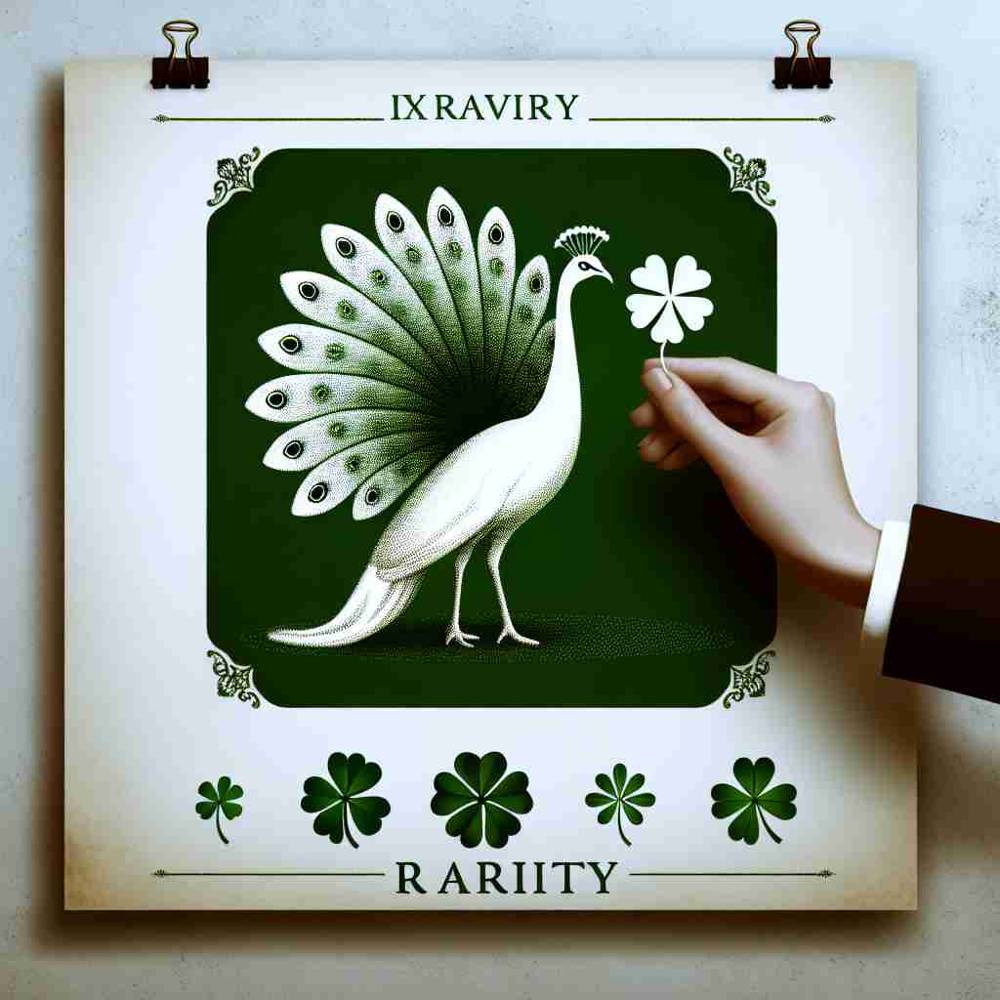

💬 Seeing a peacock is a rarity in nature. 在自然界中，看到孔雀是一件稀罕的事。

💬 People admire the rarity of diamonds in the hand. 人们欣赏手中钻石的稀有。

💬 The rarity of the flower makes it special in the forest. 花朵的稀有性使它在森林中显得特别。

💬 The rarity of the flower makes it a special sight in the forest. 这种花的稀有使之在森林中成为一种特别的景象。
🧠 记忆'rarity'时，可以想象一个珍稀的宝石。这个宝石代表了'稀有'这一核心概念，无论是指稀有的性质、稀有的物品，还是出现频率低或不寻常的状态，都可以联想到这颗珍稀宝石。这种联想有助于理解和记忆'rarity'的各种用法。
🔈 ['reərɪtɪ]
🗝️ n. the quality or state of being rare, uncommon, or unusual 稀有、不寻常或非凡的品质或状态
🎭 在一个珍稀动物保护区里，一只罕见的白孔雀正悠闲地漫步。游客们惊讶地驻足观赏，因为白孔雀的稀有性让人印象深刻，象征着 'rarity' 这一概念：稀少和不常见。
💬 The rarity of blue diamonds makes them extremely valuable. 蓝色钻石的稀缺性使它们极为珍贵。
🌳 由词根 "rar-"（稀有的）加上名词后缀 "-ity" 组成，构成一个名词，表示 "稀有，罕见"。
🕸️ 1.rare: 稀有的 2.rarefy: 使稀薄 3.rarefaction: 稀释
💡 可以联想成 "rare" 的状态，即 "rarity" 指的是事物的稀有程度。记住 "rare" 是 "罕见的"，然后加上名词化的后缀 "-ity" 形成 "rarity"，表示它的性质。